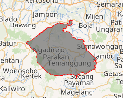
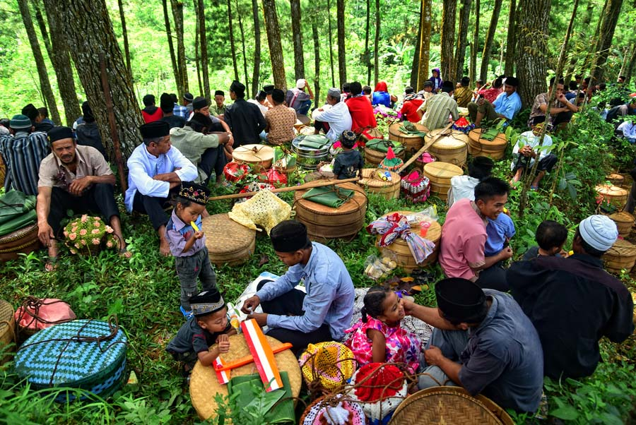
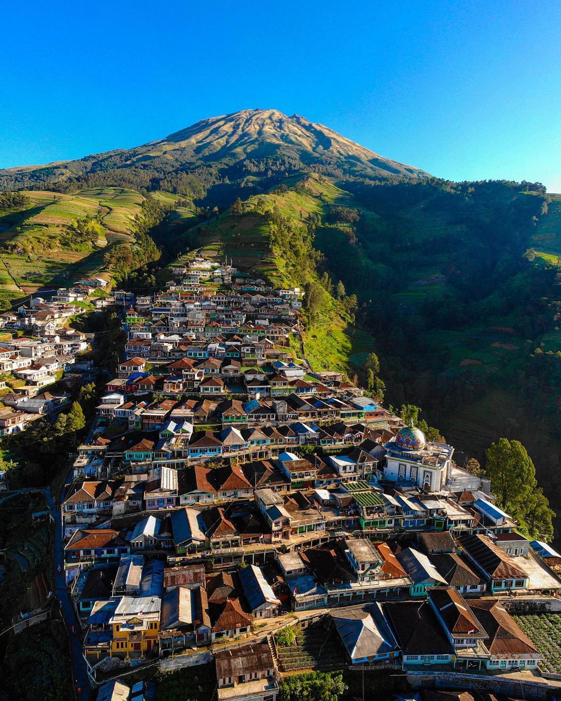
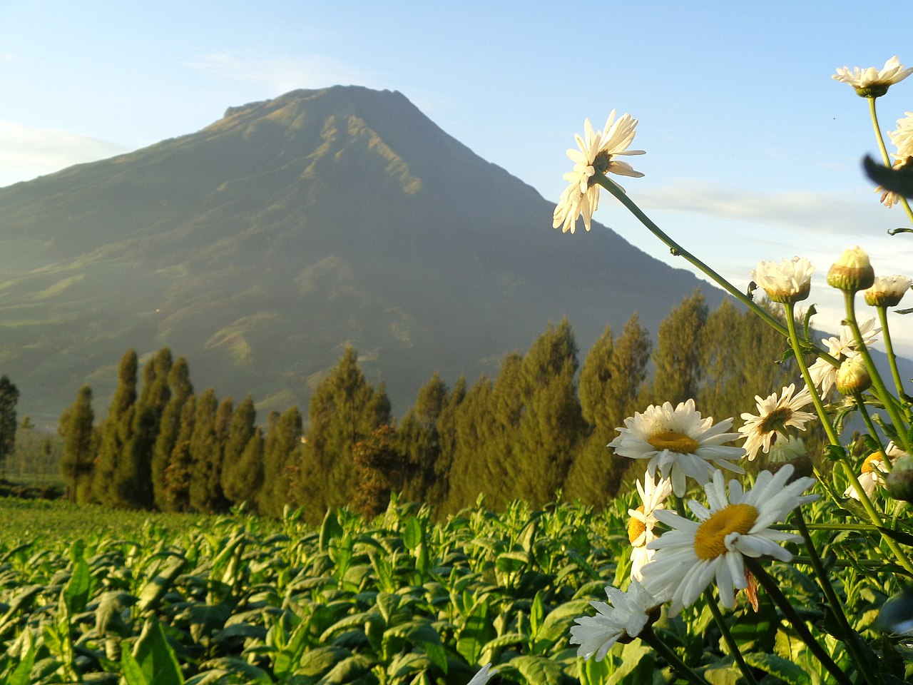
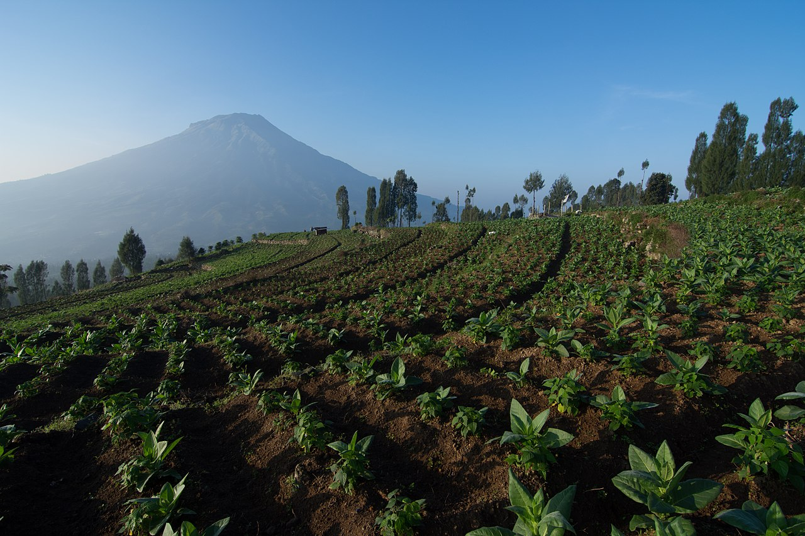

Kabupaten Temanggung (Jawa: Hanacaraka: ꦠꦼꦩꦔ꧀ꦒꦸꦁ, Pegon: تماڠڬوڠ, translit. Temanggung) adalah sebuah wilayah kabupaten yang terletak di Provinsi Jawa Tengah, Indonesia. Ibu kotanya adalah Kecamatan Temanggung Kota. Kabupaten Temanggung berbatasan dengan Kabupaten Kendal di utara, Kabupaten Semarang di timur, Kabupaten Magelang di selatan, serta Kabupaten Wonosobo di barat. Jumlah penduduk Kabupaten ini per tahun 2022 mencapai 799.764 jiwa.

Peta Kabupaten Temanggung
Sejarah

Tradisi Sadranan
Sejarah Temanggung selalu dikaitkan dengan raja Mataram Kuno yang bernama Rakai Pikatan. Nama Pikatan sendiri dipakai untuk menyebutkan suatu wilayah yang berada pada sumber mata air di desa Mudal Kecamatan Temanggung. Di sini terdapat peninggalan berupa reruntuhan batu-bebatuan kuno yang diyakini petilasan raja Rakai Pikatan.
Sejarah Temanggung asal mulai tercatat pada Prasasti Wanua Tengah III Tahun 908 Masehi yang ditemukan penduduk dusun Dunglo Desa Gandulan Kecamatan Kaloran, Temanggung pada bulan November 1983. Prasasti itu menggambarkan bahwa Temanggung semula berupa wilayah kademangan yang gemah ripah loh jinawi di mana salah satu wilayahnya yaitu Pikatan.
Hari Jadi Temanggung
Berdasarkan Surat Keputusan Komisaris Jenderal Hindia Belanda, Nomor 11 Tanggal 7 April 1826, Raden Ngabehi Djojonegoro ditetapkan sebagai Bupati Menoreh yang berkedudukan di Parakan, dengan gelar Raden Tumenggung Aria Djojonegoro.
Setelah perang Diponegoro berakhir, dia kemudian memindahkan Ibu Kota ke Kabupaten Temanggung. Kebijaksanaan pemindahan ini didasarkan pada beberapa hal:
Adanya pandangan masyarakat Jawa kebanyakan pada sat itu, bahwa Ibu Kota yang pernah diserang dan diduduki musuh dianggap telah ternoda dan perlu ditinggalkan.
Distrik Menoreh sebuah daerah sebagai asal nama Kabupaten Menoreh, sudah sejak lama digabung dengan Kabupaten Magelang, sehingga nama Kabupaten Menoreh sudah tidak tepat lagi.
Mengingat hal tersebut, atas dasar usulan Raden Tumenggung Aria Djojonegoro, lewat residen Kedu kepada Pemerintah Hindia Belanda di Batavia, maka disetujui dan ditetapkan bahwa nama Kabupaten Menoreh berubah menjadi Kabupaten Temanggung. Persetujuan ini berbentuk Resolusi Pemerintah Hindia Belanda Nomor 4 Tanggal 10 November 1834.
Mempertimbangkan bahwa Hari Jadi Daerah merupakan awal perjalanan sejarah, agar diketahui semua lapisan masyarakat, guna memacu meningkatkan semangat pembangunan dan pengembangan daerah, maka Pemerintah Kabupaten Dati II Temanggung menugaskan kepada DPD II KNPI Kabupaten Temanggung untuk mengadakan pelacakan sejarah dan seminar tentang Hari Jadi Kabupaten Temanggung. Dari hasil seminar tanggal 21 Oktober 1985, yang diikuti oleh Sejarawan, Budayawan dan Tokoh Masyarakat, ABRI, Rohaniwan, Dinas/Instansi/Lembaga Masyarakat dan lain-lainnya, maka ditetapkan bahwa tanggal 10 November 1834 sebagai Hari Jadi Kabupaten Temanggung.
Geografis
Gunung Sumbing dan Sindoro
Sebagian besar wilayah Kabupaten Temanggung merupakan dataran tinggi dan pegunungan, yakni bagian dari rangkaian Dataran Tinggi Dieng. Di perbatasan dengan Kabupaten Wonosobo terdapat Gunung Sindoro dan Gunung Sumbing. Temanggung berada di jalan provinsi yang menghubungkan Semarang-Purwokerto.
Jalan Raya Parakan-Weleri menghubungkan Temanggung dengan jalur pantura. Untuk daerah yang berbatasan dengan Kabupaten Semarang persisnya di Kecamatan Pringsurat, dilalui oleh jalan nasional yang menghubungkan Semarang-Yogyakarta.
Penduduk
Kabupaten Temanggung terdiri dari 20 kecamatan, 23 kelurahan, dan 266 desa. Pada tahun 2017, jumlah penduduknya mencapai 769.843 jiwa dengan luas wilayah 837,71 km² dan sebaran penduduk 919 jiwa/km².
Daftar kecamatan dan kelurahan di Kabupaten Temanggung, adalah sebagai berikut:
Kode Kemendagri
Kecamatan
Jumlah Desa/Kelurahan
Daftar Desa/Kelurahan
33.23.16
Bansari
13
Balesari
Bansari
Candisari
Wisata
Gunung Sumbing

Gunung Sumbing
Gunung Sumbing adalah gunung api yang terdapat di Jawa Tengah, Indonesia. (Ketinggian puncak 3.371 mdpl), gunung Sumbing merupakan gunung tertinggi ketiga di Pulau Jawa setelah Gunung Semeru dan Gunung Slamet. Gunung ini secara administratif terletak di tiga wilayah kabupaten, yaitu Kabupaten Magelang; Kabupaten Temanggung; dan Kabupaten Wonosobo.
Bersama dengan Gunung Sindoro, Gunung Sumbing membentuk bentang alam gunung kembar, seperti Gunung Merapi dan Gunung Merbabu, apabila dilihat dari arah Temanggung. Celah antara gunung ini dan Gunung Sindoro dilalui oleh jalan provinsi yang menghubungkan kota Temanggung dan kota Wonosobo. Jalan ini biasa dijuluki sebagai "Kledung Pass".
Dalam Catatan sejarah Sebelum bernama Gunung Sumbing, gunung ini bernama Gunung sembung. Hal ini berdasar dari Manuskrip Bujangga Manik ketika dia melewati dataran tinggi Dieng yang berbunyi:
"nepi aing ka Panjalin.
Sacu(n)duk aing ka Se(m)bung,
ngalalar ka Paka(n)dangan.
Sadatang ka Padanara,
nu(n)juk gunung nyangkidulkeun:
765 itu ta na gunung Rahung,
ti kulonna gunung Diheng,
itu ta gunung Sundara,
itu ta na gunung Kedu,
ti kidul gunung Damalung"
Manuskrip Bujangga Manik
Letusan terakhir tercatat pada tahun 1730, yang membentuk kubah lava dengan aliran lava ke arah bibir kawah terendah. Gunung Sumbing mempunyai kawasan hutan Dipterokarp Bukit, hutan Dipterokarp Atas, hutan Montane, dan Hutan Ericaceous atau hutan gunung. Sebagian besar wilayah lereng gunung ini telah digunakan untuk lahan pertanian.
Gunung Sindoro

Gunung Sindoro
Gunung Sindoro atau Gunung Sundoro (puncak ketinggian 3.153 mdpl) (Jawa: ꦒꦸꦤꦸꦁꦱꦸꦤ꧀ꦢꦫ, translit. Gunung Sundara) merupakan sebuah gunung volkano aktif yang terletak di Jawa Tengah, Indonesia, dengan Temanggung sebagai kota terdekat. Gunung Sindoro terletak berdampingan dengan Gunung Sumbing. Gunung sindara dapat terlihat jelas dari puncak sikunir dieng.
Kawah yang disertai jurang dapat ditemukan di sisi barat laut ke selatan gunung, dan yang terbesar disebut Kembang. Sebuah kubah lava kecil menempati puncak gunung berapi. Sejarah letusan Gunung Sindara yang telah terjadi sebagian besar berjenis ringan sampai sedang (letusan freatik).
Posong

Posong
Adalah lokasi wisata alam yang berada di Tlahab, dengan perintis pertama wisata Posong adalah Zuniyanto sebagai salah satu dari penggiat lingkungan hidup Komunitas Djogoreso desa Tlahab, Kecamatan Kledung, Kabupaten Temanggung pada tahun 2009. Kata "Posong" berasal dari dua kata, yaitu "pos" dan "kosong" yang sengaja dibuat oleh Pangeran Diponegoro pada zaman penjajahan untuk memancing pihak Belanda melakukan penyerangan di pos yang ternyata kosong.
Wisata Posong berada di kaki Gunung Sindoro. Pengunjung yang datang dapat menikmati matahari terbit dari ketinggian 1400 mdpl serta dapat melihat keindahan 8 gunung sekaligus, yaitu : Gunung Andong Gunung Sindoro, Gunung Sumbing, Gunung Merbabu, Gunung Ungaran, Gunung Muria, Gunung Merapi dan Gunung Telomoyo. Untuk bisa menginap di Posong pengelola menyediakan fasilitas kemah dengan konsep soft adventure.